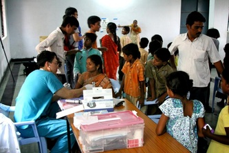
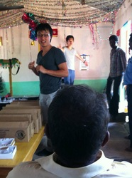
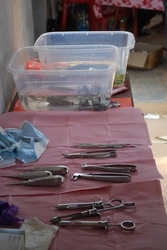
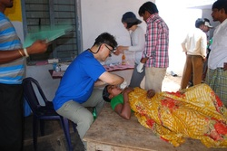
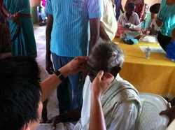

Health Clinics
Medical, Dental, & Vision care for rural villages
Medical Clinic
From Monday to Friday, 9:00 a.m. to 4:00 p.m., our team operates a traveling medical clinic in rural villages. Most of our patients are hardworking farmers who come with aches, pains, and untreated conditions from years of labor. For many, this is their first-ever visit to a physician.
Each clinic is staffed by a dedicated team: a doctor, a local translator, and an acting pharmacist. Together, they provide compassionate care to hundreds of villagers who patiently line up for treatment. Donated medicines are distributed free of charge, offering both relief and hope.
Setting up these medical clinics is one of the most rewarding parts of our mission trips, meeting physical needs while building relationships in the community.



Dental Clinic
When the doctor arrives, the line forms quickly—but when the villagers see the dentist's instruments, hesitation sets in. There's a natural fear, especially for those who have never received dental care before.
It only takes one brave soul to step forward. A tooth is pulled, no pain, only a sigh of relief. The crowd watches intensely, and soon word spreads. Confidence replaces fear, and the line begins to grow.
Our dental team provides extractions and simple fillings using a portable dental unit. Most supplies are donated in the U.S. and brought to India, enabling us to serve hundreds of patients each trip. For many, it's their first dental experience, bringing not only relief from pain but also restored confidence and dignity.


Vision Clinic
Alongside the medical and dental team, we set up a vision clinic in the villages to distribute much-needed reading glasses. The demand is overwhelming—so many struggle to see clearly, yet have never had access to basic eye care. Due to limited time, we focus on providing reading glasses only. These are purchased in advance and brought to India as part of our mission supplies.
There's nothing more rewarding than the moment someone puts on a pair of glasses and their face lights up—realizing, often for the first time in years, that they can read again.
Join Our Medical Team
Healthcare professionals and volunteers are always needed for our mission trips.
Learn About Trips